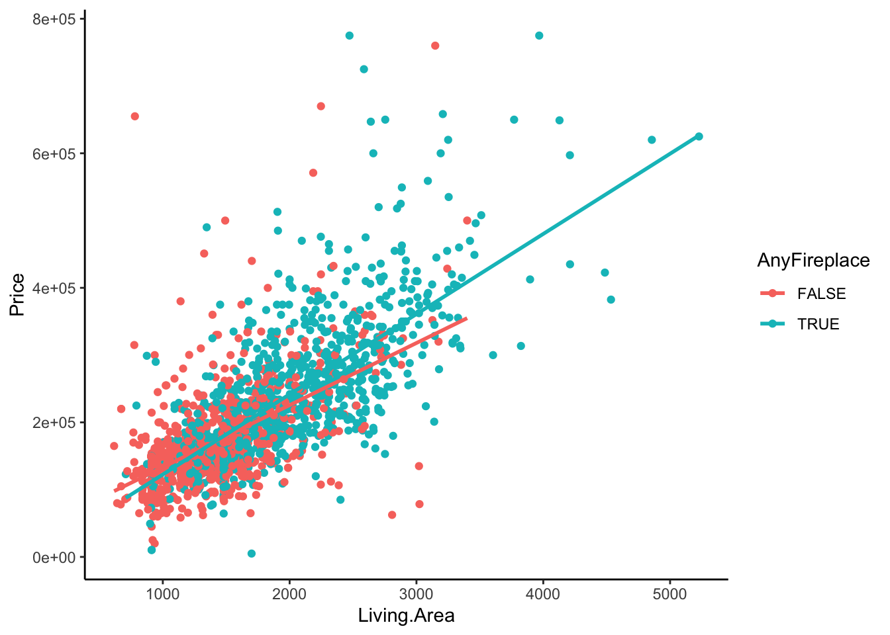
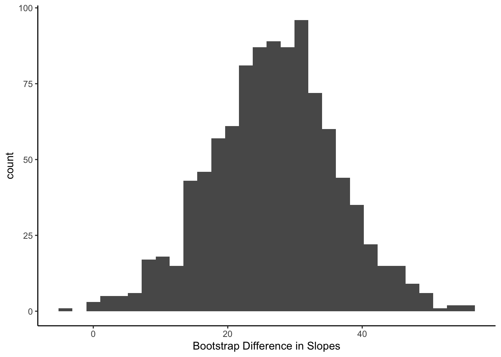
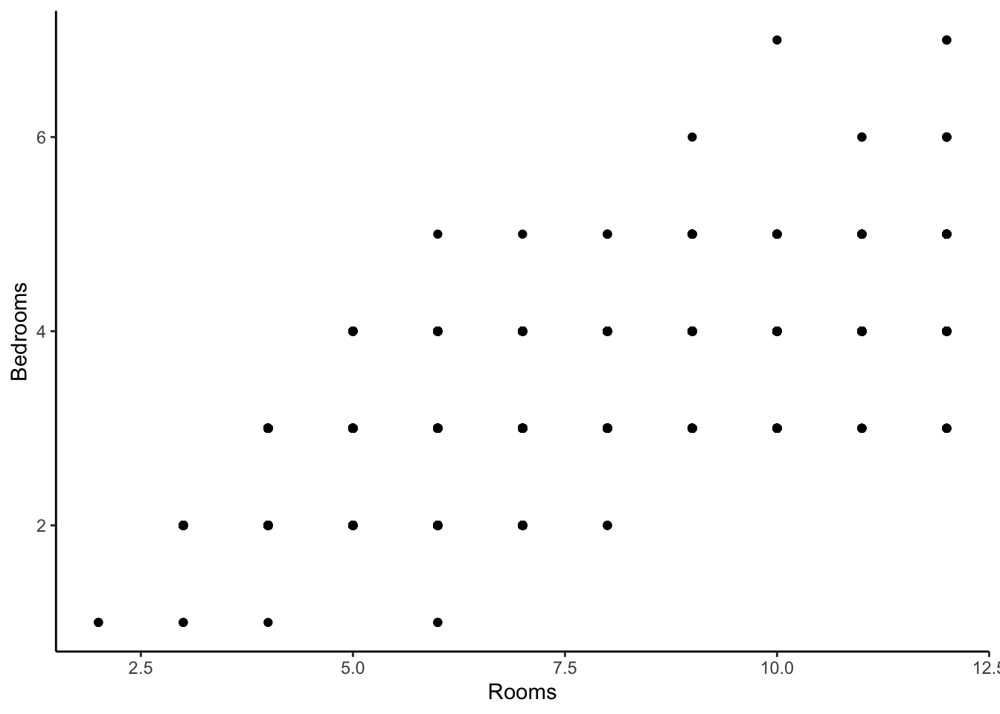
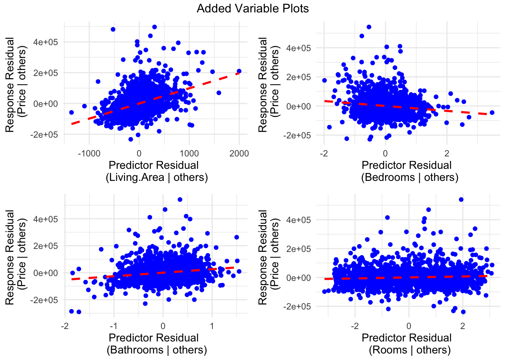

3.9 Multiple Linear Regression
As we’ve alluded to, we can generalize the idea of a simple linear regression model by including many predictor variables (\(X\)’s). A multiple linear regression model can be written as:
\[ E[Y |X_1,...,X_k ] = \beta_0 + \beta_1\,X_{1} + \cdots + \beta_k\,X_{k} \]
Each “slope” coefficient \(\beta_j\) can be interpreted as the increase in the expected or average \(Y\) associated with a 1 unit increase in \(X_j\), keeping all other variables fixed or constant. (*There are some exceptions - we’ll get there.)
These explanatory variables can be:
- Quantitative variables (or transformations of them)
- Indicator variables for categorical variables (only need \(L-1\) indicators for a variable with \(L\) categories)
- Interaction terms (product of two variables, which allows for effect modification)
Let’s talk about a new data example: home prices. We want to build a model to predict the price of a home based on its many characteristics. We have a dataset of homes recently sold in New England with many variables such as the age of the home, the land value, whether or not it has central air conditioning, the number of fireplaces, the sale price, and more…
## Price Lot.Size Waterfront Age Land.Value New.Construct Central.Air Fuel.Type
## 1 132500 0.09 0 42 50000 0 0 3
## 2 181115 0.92 0 0 22300 0 0 2
## 3 109000 0.19 0 133 7300 0 0 2
## 4 155000 0.41 0 13 18700 0 0 2
## 5 86060 0.11 0 0 15000 1 1 2
## 6 120000 0.68 0 31 14000 0 0 2
## Heat.Type Sewer.Type Living.Area Pct.College Bedrooms Fireplaces Bathrooms
## 1 4 2 906 35 2 1 1.0
## 2 3 2 1953 51 3 0 2.5
## 3 3 3 1944 51 4 1 1.0
## 4 2 2 1944 51 3 1 1.5
## 5 2 3 840 51 2 0 1.0
## 6 2 2 1152 22 4 1 1.0
## Rooms
## 1 5
## 2 6
## 3 8
## 4 5
## 5 3
## 6 8*The exception to the interpretation comment above is if some of our \(X\) variables are strongly correlated (called multicollinearity). In this case, we cannot hold all other variables constant (at least not well) because if we increase the value of one variable, then variables highly correlated with it will also likely change in value.
3.9.1 Indicator Variables
In New England, fireplaces are often used as a way to provide supplementary heat to the house. Let’s study the impact a fireplace has on the sale price of a home. In particular, we only care if the home has 1 or more fireplaces or no fireplaces. So we make a new variable, AnyFireplace, that is TRUE if there is at least one fireplace in a home and FALSE otherwise.
In order to include this information in our linear regression model, we need to turn that categorical variable (AnyFireplace with values of TRUE or FALSE) into a quantitative variable using an indicator variable, which has a numeric value of 0 or 1:
\[ \hbox{AnyFireplaceTRUE} = \begin{cases}1 \quad \text{ if a home has at least one fireplace}\\ 0\quad \text{ if a home does not have a fireplace} \end{cases}\] Our model is written as
\[E[\hbox{Price} | \hbox{AnyFireplace}] = \beta_0 + \beta_1 \hbox{AnyFireplaceTRUE}\]
What does this mean?
Let’s think about two types of homes: a home with one or more fireplaces and a home without a fireplace. Let’s write out the model equations for those two types of homes.
Home with fireplace (indicator variable = 1):
\[E[\hbox{Price} | \hbox{AnyFireplace} = TRUE] = \beta_0 + \beta_1*1 = \beta_0+\beta_1\]Home without fireplace (indicator variable = 0):
\[E[\hbox{Price} | \hbox{AnyFireplace} = FALSE] = \beta_0 + \beta_1*0 = \beta_0\] The difference between the expected price is \(\beta_1\), the value of the “slope” coefficient for the indicator variable (also referred to as theAnyFireplaceTRUEcoefficient).
To get an estimate of \(\beta_1\), we need to fit our model to the data. In fact, R creates this indicator variable for you when you include a categorical variable as an \(X\) variable the lm() function.
## # A tibble: 2 × 5
## term estimate std.error statistic p.value
## <chr> <dbl> <dbl> <dbl> <dbl>
## 1 (Intercept) 174653. 3419. 51.1 0
## 2 AnyFireplaceTRUE 65261. 4522. 14.4 1.17e-44Our best fitting “line” is
\[ \hbox{Predicted Price} = 174653 + 65261\,\hbox{AnyFireplaceTRUE} \] and our predicted price for a house with a fireplace (indicator variable = 1) is
\[ \hbox{Predicted Price} = 174653 + 65261 \times 1 = \$ 239,914 \]
## [1] 239914and the predicted price for a house without a fireplace (indicator variable = 0) is
\[\hbox{Predicted Price} = 174653 + 65261 \times 0 = \$ 174,653\]
The difference between these predicted prices is \(\hat{\beta}_1\) = $65,261, the estimated value of the “slope” for the indicator variable.
So is this how much a fireplace is worth? If I installed a fireplace in my house, should the value of my house go up $65,260?
No, because we should not make causal statements based on observational data without thinking deeply about the context. What could be confounding this relationship? What third variable may be related to both the price and whether or not a house has a fireplace?
3.9.2 Confounder Adjustment
Let’s consider the size of the house. Is price related to the area of living space (square footage)?
homes %>%
ggplot(aes(x = Living.Area, y = Price)) +
geom_point(color = 'steelblue') +
theme_classic()Is the presence of a fireplace related to area of living space?

We see that the amount of living area differs between homes with fireplaces and homes without fireplaces. Thus, Living.Area could confound the relationship between AnyFireplace and Price because it is related to both variables. That is, it is possible that Living Area is a cause of having a fireplace (if you have a bigger house, you have more space to put in a fireplace) and Living Area also clearly is a cause of Price (the bigger the house, the more it costs).
Let’s put Living.Area in the model along with AnyFireplace to account for it (to control or adjust for it),
\[E[\hbox{Price} | \hbox{AnyFireplace, Living.Area}] = \beta_0 + \beta_1\,\hbox{AnyFireplaceTRUE} + \beta_2\,\hbox{Living.Area}\]
What does this mean?
Let’s think about two types of homes: a home with one or more fireplaces and a home without a fireplace.
- Home with fireplace (indicator = 1):
\[\begin{align*} E[\hbox{Price}| \hbox{AnyFireplace = TRUE, Living.Area}] &= \beta_0 + \beta_1 \times 1 + \beta_2 \times \hbox{Living.Area} \\ &= (\beta_0 + \beta_1 ) + \beta_2 \times \hbox{Living.Area} \end{align*}\]
Among homes with a fireplace, we have one linear relationship between living area and price. The intercept is \(\beta_0+\beta_1\) and the slope is \(\beta_2\).
- Home without fireplace (indicator = 0):
\[\begin{align*} E[\hbox{Price}| \hbox{AnyFireplace = FALSE, Living.Area}] &= \beta_0 + \beta_1 \times 0 + \beta_2 \times \hbox{Living.Area} \\ &= \beta_0 + \beta_2 \times \hbox{Living.Area} \end{align*}\]
Among homes without a fireplace, we have a different linear relationship between living area and price. The intercept is \(\beta_0\) and the slope is \(\beta_2\).
- For either type of home, \(\beta_2\) is the increase in the expected or average Price associated with a 1 square footage increase in Living.Area, holding the number of fireplaces constant.
Now let’s compare homes that are the same size.
If we keep Living.Area constant by considering two equally sized homes, then we’d expect the home with the fireplace to be worth \(\beta_1\) more than a home without a fireplace.
We see this by taking the difference between the two equations, fixing the Living Area:
\[E[\hbox{Price}| \hbox{AnyFireplace = T, Living.Area = A}] - E[\hbox{Price}| \hbox{AnyFireplace = F, Living.Area = A}]\]
\[\begin{align*} \,&= (\beta_0+\beta_1 + \beta_2 \times \hbox{A}) - ( \beta_0 + \beta_2 \times \hbox{A})\\ \,&= \beta_1 \end{align*}\]
Another way to describe \(\beta_1\) is that it is the difference between the intercepts.
To get the estimates of \(\beta_0,\beta_1,\) and \(\beta_2\), we fit the model in R,
## # A tibble: 3 × 5
## term estimate std.error statistic p.value
## <chr> <dbl> <dbl> <dbl> <dbl>
## 1 (Intercept) 13599. 4992. 2.72 6.51e- 3
## 2 AnyFireplaceTRUE 5567. 3717. 1.50 1.34e- 1
## 3 Living.Area 111. 2.97 37.5 2.20e-225Our best fitting “line” is
\[\hbox{Predicted Price} = 13599.16 + 5567.37\,\hbox{AnyFireplaceTRUE} + 111.21\,\hbox{Living.Area}\]
$111.21 is the estimated increase in the expected or average Price associated with a 1 square foot increase in Living.Area, holding all other variables (AnyFireplace) constant.
$5567.37 is the estimated increase in the expected or average Price associated with a 1 unit increase in AnyFireplace (going from FALSE to TRUE), holding all other variables (Living.Area) constant.
Note that the “slope” for the indicator variable is very different with the addition of Living.Area. This suggests that Living.Area was confounding the relationship between Price and AnyFireplace.
Let’s look back at the relationship between Living.Area and Price and color the scatterplot by AnyFireplace. So we are now looking at three variables at a time. The above model with AnyFireplace and Living.Area results in two lines for Living.Area v. Price, with different intercepts but the same slope (parallel lines). We can create the lines manually,
homes %>%
ggplot(aes(x = Living.Area, y = Price, color = AnyFireplace)) +
geom_point() +
geom_abline(intercept = 13599.164 , slope = 111.218, color = scales::hue_pal()(2)[1]) +
geom_abline(intercept = 13599.164 + 5567.377, slope = 111.218 , color = scales::hue_pal()(2)[2]) +
theme_classic()
or we could use our model to plot the lines for us.
lm.home2 %>%
augment() %>%
ggplot(aes(x = Living.Area, color = AnyFireplace)) +
geom_point(aes(y = Price)) +
geom_line(aes(y = .fitted)) +
theme_classic()Let’s try and fit two separate lines to these two groups of homes, home with any fireplaces and home with no fireplaces. Do these lines have the same intercepts? Same slopes?
homes %>%
ggplot(aes(x = Living.Area, y = Price, color = AnyFireplace)) +
geom_point() +
geom_smooth(method = 'lm', se = FALSE) +
theme_classic()
In this case, it looks as though having a fireplace in your house slightly changes the relationship between Living.Area and Price. In fact, the increase in your average price for every 1 square foot is greater for a home with a fireplace than that for homes without fireplaces (slopes are different).
3.9.3 Interaction Variables
We can allow for different slopes within one regression model (!), rather than fitting two separate models.
When should we fit only one model; when should we fit separate models?
If we fit separate models, we are stratifying and then modeling. But what if some of the strata are small?
Fitting one model allows us to “borrow information across groups.”
There is no one right answer. Researchers struggle with this decision to stratify or not to stratify.
If we add a variable in the model (without an interaction), it only changes the intercept.
We can achieve different slopes by allowing a variable \(X_1\) to affect the slope for another variable \(X_2\). That is, \(X_1\) impacts the effect of \(X_2\) on the outcome \(Y\). (Fireplace presence impacts the effect of living area on house price.)
\[\beta_2 = a + bX_1\] This is called effect modification (when one variable can modify the effect of another variable on the outcome).
- A model with effect modification looks like this: \[E[Y | X_1, X_2] = \beta_0 + \beta_1X_{1} + \beta_2X_{2} \] \[= \beta_0 + \beta_1X_{1} + (a+bX_1)X_{2}\] \[ = \beta_0 + \beta_1X_{1} +aX_2+bX_1X_{2}\]
The model above has an interaction term, which is the product of two variables. Here we have \(X_1*X_2\).
Let’s build a model with effect modification for our housing data. Let’s include an interaction term between AnyFireplace and Living.Area to allow for different slopes.
\[E[\hbox{Price}| \hbox{AnyFireplace, Living.Area}] = \beta_0+ \beta_1\,\hbox{AnyFireplaceTRUE}\\ + \beta_2\,\hbox{Living.Area} + \beta_3\,\hbox{AnyFireplaceTRUE}*\hbox{Living.Area}\]
What does this mean?
Let’s think about two types of homes: a home with one or more fireplaces and a home without a fireplace.
- Home with fireplace (indicator = 1):
\[\begin{align*} E[\hbox{Price}| \hbox{AnyFireplace = TRUE, Living.Area}] &= \beta_0 + \beta_1*\,1 + \beta_2\,\hbox{Living.Area}\\ & + \beta_3*\,1*\hbox{Living.Area}\\ &= (\beta_0 + \beta_1) + (\beta_2+\beta_3)\,\hbox{Living.Area}\\ \end{align*}\]
- Home without fireplace (indicator = 0):
\[\begin{align*} E[\hbox{Price}| \hbox{AnyFireplace = FALSE, Living.Area}] &= \beta_0 + \beta_1*\,0 + \beta_2\,\hbox{Living.Area}\\ &+ \beta_3*\,0*\hbox{Living.Area}\\ &= \beta_0 + \beta_2\,\hbox{Living.Area}\\ \end{align*}\]
Note that there are different intercepts and different slopes for these two groups of homes. Thus, including an interaction term between a categorical and a quantitative predictor variable allows us to describe effect modification. How does the effect of one variable on the response variable differ according to another variable? How is the effect modified by another variable?
- \(\beta_1\) is the difference in the intercepts between homes with and without a fireplace
- \(\beta_3\) is the difference in the slopes between homes with and without a fireplace
What this means in the context of this model of price as a function of living area and fireplaces: different slopes means that the average rate of price increase for every additional square foot is different between homes with and without fireplaces.
If we fit this model with interaction terms, we get the following estimates:
## # A tibble: 4 × 5
## term estimate std.error statistic p.value
## <chr> <dbl> <dbl> <dbl> <dbl>
## 1 (Intercept) 40901. 8235. 4.97 7.47e- 7
## 2 AnyFireplaceTRUE -37610. 11025. -3.41 6.61e- 4
## 3 Living.Area 92.4 5.41 17.1 1.84e-60
## 4 AnyFireplaceTRUE:Living.Area 26.9 6.46 4.16 3.38e- 5- Homes with fireplace (indicator = 1):
\[\begin{align*} \hbox{Predicted Price} &= 40901.29 + -37610.41 \times 1 + 92.36391 \times \hbox{Living.Area} + 26.85 \times \hbox{Living.Area} \times 1 \\ & = \$3,290.88 + \$119.21 \times \hbox{Living.Area} \end{align*}\]
## [1] 3290.88## [1] 119.2139- Homes without fireplace (indicator = 0):
\[\begin{align*} \hbox{Predicted Price} &= 40901.29 + -37610.41 \times 0 + 92.36391 \times \hbox{Living.Area}\\ &+ 26.85 \times \hbox{Living.Area} \times 0 \\ &= \$40,901.29 + \$92.36 \times \hbox{Living.Area} \end{align*}\]
- \(\$-37610.41\) is the difference in the estimated intercepts between homes with and without a fireplace (or, put another way, \(\$-37610.41\) is the difference in the estimated average price between homes with and without a fireplace that are 0 square feet)
- \(\$26.85\) is the difference in the estimated slopes between homes with and without a fireplace (or, put another way, \(\$26.85\) is the difference in the estimated “effect” of living area on price between homes with and without a fireplace, where the “effect” of living area on price is the change in average price associated with a 1 square foot increase in living area)
3.9.4 Is the Difference Real?
We could ask: is there really a difference in the slopes for Living Area and Price between homes with and without a fireplace?
## # A tibble: 4 × 5
## term estimate std.error statistic p.value
## <chr> <dbl> <dbl> <dbl> <dbl>
## 1 (Intercept) 40901. 8235. 4.97 7.47e- 7
## 2 AnyFireplaceTRUE -37610. 11025. -3.41 6.61e- 4
## 3 Living.Area 92.4 5.41 17.1 1.84e-60
## 4 AnyFireplaceTRUE:Living.Area 26.9 6.46 4.16 3.38e- 5If we ask ourselves this question, we are assuming a few things:
We would like to make a general statement about a target population of interest.
We don’t have data for everyone in our population (we don’t have a census).
Depending on who randomly ends up in our sample, the relationship may change a bit.
We want to know how much the relationship may change based on sampling variation.
- Let’s treat our sample (of size \(n\)) as a ‘fake’ population (we don’t have the full population but if the sample is representative, then it will be a good proxy).
- Randomly resample from our sample (with replacement) a new sample of size \(n\)
- Estimate the least squares regression line.
- Repeat.
set.seed(333) ## Setting the seed ensures that our results are reproducible
## Repeat the sampling and regression modeling 1000 times
boot <- do(1000)*(
homes %>%
sample_frac(replace = TRUE) %>%
with(lm(Price ~ Living.Area*AnyFireplace))
)
## Plot the distribution of the 1000 slope differences
boot %>%
ggplot(aes(x = Living.Area.AnyFireplaceTRUE)) +
geom_histogram() +
labs(x = 'Bootstrap Difference in Slopes') +
theme_classic()
We see that if we were to have a slightly different sample (drawn from our “fake” population), then the difference in the slope could be as long as 0 and as large as 50.
This process of resampling from the sample is called Bootstrapping and it is used to:
- Measure the variability in the estimates (here we are interested in the difference in slopes) between random samples and
- Provide an interval of plausible values for the estimate (the difference in slopes here).
Let’s first look at the variability of the difference in slopes across the bootstrap samples. The standard deviation of the bootstrap estimates will be similar to the Std. Error from the linear model output.
## sd(Living.Area.AnyFireplaceTRUE)
## 1 9.332937#this is going to be of similar magnitude (not exactly the same) to the Std. Error for the Living.Area.AnyFireplaceTRUE coefficient in output
lm.home3 %>%
tidy()## # A tibble: 4 × 5
## term estimate std.error statistic p.value
## <chr> <dbl> <dbl> <dbl> <dbl>
## 1 (Intercept) 40901. 8235. 4.97 7.47e- 7
## 2 AnyFireplaceTRUE -37610. 11025. -3.41 6.61e- 4
## 3 Living.Area 92.4 5.41 17.1 1.84e-60
## 4 AnyFireplaceTRUE:Living.Area 26.9 6.46 4.16 3.38e- 5This standard deviation is somewhat close to the \(6.459\) for Living.Area.AnyFireplaceTRUE coefficient in the Std. Error column of the tidy(lm.home3) output above.
To get an interval of plausible values for the difference in the slopes, we look at the histogram and take the middle 95%. The lower end will be the 2.5th percentile and the upper end will be the 97.5th percentile.
boot %>%
summarize(
lower = quantile(Living.Area.AnyFireplaceTRUE, 0.025),
upper = quantile(Living.Area.AnyFireplaceTRUE, 0.975))## lower upper
## 1 7.686552 45.43513Based on this evidence, do you think it is possible that the slopes are the same for the two types of homes (with and without fireplaces)? How would you justify your answer? Consider the plausible values of the difference in slopes given by the interval above.
3.9.5 Redundancy and Multicollinearity
Beyond fireplaces and living area, there are other characteristics that may impact the price of a home. Typically, homes for sale are advertised with the square footage, the number of bedrooms, and the number of bathrooms in addition to the total number of rooms in the house. In general, we’d expect a positive relationship between each of these and the home price. Let’s fit a model with those four explanatory variables.
lm.home4 <- homes %>%
with( lm(Price ~ Living.Area + Bedrooms + Bathrooms + Rooms))
lm.home4 %>%
tidy()## # A tibble: 5 × 5
## term estimate std.error statistic p.value
## <chr> <dbl> <dbl> <dbl> <dbl>
## 1 (Intercept) 18937. 6871. 2.76 5.91e- 3
## 2 Living.Area 98.6 4.93 20.0 4.40e-80
## 3 Bedrooms -16923. 2832. -5.98 2.79e- 9
## 4 Bathrooms 26039. 3543. 7.35 3.07e-13
## 5 Rooms 3400. 1110. 3.06 2.22e- 3If we look at the estimates of the slope coefficients, are you surprised to see that Bedrooms has a negative slope estimate?
Remember, the coefficients are the change in the expected price for a 1 unit change in that variable, keeping all other variables fixed. Is it possible to keep Rooms fixed while adding an additional Bedroom? In practice, that would mean you need to convert an existing room to a Bedroom. Let’s look at a scatterplot between these two variables. If it is not realistic or possible to fix one variable while increasing the other, we cannot interpret the slope coefficients in the standard way.

## cor(Rooms, Bedrooms)
## 1 0.6718633These two characteristics are positively correlated because the count of Rooms is defined as the number of Bedrooms plus the number of other rooms in the house. So they contain some similar information about a home. Knowing how many rooms a house has, you can could have a pretty good guess at how many bedrooms it has. Maybe one of these variables is a bit redundant.
Let’s take another view at this model with an Added Variable Plot. Here are a few characteristics of an added variable plot.
- We have one scatterplot per \(X\) explanatory variable in the model.
- For each scatterplot, the values on the x and y axes are residuals from two different models, both of which we have not directly fit.
What are these models?
- For the y-axes, the model that is fit is a multiple linear regression model for \(E[Y |\hbox{ all other }X\hbox{ variables except }X_j]\). The residuals from this model encode the variation and information about \(Y\) that is left unexplained by other \(X\) variables.
- For the x-axes, the model that is fit is a multiple linear regression model for \(E[X_j | \hbox{ all other }X\hbox{ variables except }X_j]\). The residuals from this model encode the variation and information about \(X_j\) that is left unexplained by other \(X\) variables. In other words, the unique information the \(X_j\) has that is not contained in the other \(X\) variables.
- The slope of the line in each scatterplot is equal to the estimated slope coefficient for that variable in the model you fit.
If we look at the example below, we see a fairly strong positive relationship in the first (upper left) scatterplot. What we can conclude is that living area has quite a bit of unique information not contained in Bedrooms, Rooms, and Bathrooms that can explain variation in home price. Another way to phrase this is that after adjusting for or accounting for the number of Bedrooms, Rooms, and Bathrooms, we see a moderately strong positive linear relationship between Living.Area and Price.
In the second (upper right) scatterplot, we see a weak negative relationship between Bedrooms and Price after accounting for the square footage of the living area, the number of bathrooms, and the number of rooms. So there isn’t much unique information about bedrooms that can help explain the variation in price that isn’t already contained in Rooms, Bathrooms, and Living.Area. Since the slope is negative, we might conclude that converting an existing room (keeping square footage and number of rooms fixed) to a bedroom slightly decreases the estimated expected home price.
With Rooms and Bathrooms, we see positive but weak relationships after accounting for the other explanatory variables. In fact, the slope of these lines are equal to the estimated coefficients from the summary.

If we were to remove Rooms as it seems to be redundant, containing similar information as Bedrooms, we get a bit different estimated slope coefficients.
## # A tibble: 4 × 5
## term estimate std.error statistic p.value
## <chr> <dbl> <dbl> <dbl> <dbl>
## 1 (Intercept) 21323. 6844. 3.12 1.86e- 3
## 2 Living.Area 105. 4.44 23.7 1.50e-107
## 3 Bedrooms -13702. 2636. -5.20 2.26e- 7
## 4 Bathrooms 25913. 3551. 7.30 4.49e- 13So should Rooms stay in the model or come out?
Does adding Rooms help explain more variation in home Price?
We can see that WITH Rooms, we explained 53.2% of the variation in home Price.
We can see that WITHOUT Rooms, we explained 52.9% of the variation in home Price.
So Rooms doesn’t add a lot to the explanatory power of the model.
## # A tibble: 1 × 12
## r.squared adj.r.squared sigma statistic p.value df logLik AIC BIC
## <dbl> <dbl> <dbl> <dbl> <dbl> <dbl> <dbl> <dbl> <dbl>
## 1 0.532 0.531 67388. 491. 1.58e-282 4 -21662. 43335. 43368.
## # ℹ 3 more variables: deviance <dbl>, df.residual <int>, nobs <int>## # A tibble: 1 × 12
## r.squared adj.r.squared sigma statistic p.value df logLik AIC BIC
## <dbl> <dbl> <dbl> <dbl> <dbl> <dbl> <dbl> <dbl> <dbl>
## 1 0.530 0.529 67552. 648. 6.15e-282 3 -21666. 43343. 43370.
## # ℹ 3 more variables: deviance <dbl>, df.residual <int>, nobs <int>Fun Fact: Adding an explanatory variable \(X\) to the model will always increase R-squared or keep it the same.
In general, we’d like the most simple model (with the fewest \(X\) variables) that does a good job for our goals. If R-squared never goes down when you add an explanatory variable, we need a different tool to help us decide whether to add a variable.
Remember that \[R^2 = 1 - \frac{SSE}{SSTO} = \%\hbox{ of variation in Y explained by model}\]
Adjusted R-Squared is a slightly adjusted version of R-squared that takes into account the number of \(X\) variables in the model, denoted as \(k\). It is calculated as
\[R^2_{adj} = 1 - \frac{SSE/(n-k-1)}{SSTO/(n-1)}\]
It does NOT have the interpretation of “% of variation explained…” but it can be used to help us decide whether a variable is redundant or whether we should keep it in the model. The adjusted R-squared for these two models are 0.531 (with Rooms) and 0.529 (without Rooms). This is a judgment call that you as the data analyst makes and this is one tool to help you make the decision. See the next section for more tools to help you decide.